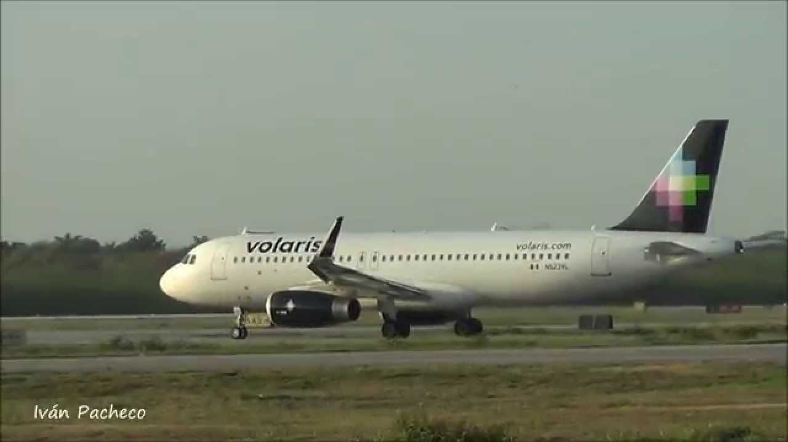

Volai | Agrolašmuo Volai skirti suspausti paviršinį dirvos sluoksnį mažame gylyje, pagrinde sėjant javus, kukurūzus ir burokus. Volų naudojimas yra labai svarbus agrotechninis veiksmas nuo kurio ženkliai priklauso apdirbamų laukų kokybė. Nauda kurią duoda...
Volai - UAB Margučiai Naudota žemės ūkio technika, padargai - volai. Detalesnė informacija ir nuotraukų galerija internetinėje svetainėje agrolasmuo.lt Susisiekite.
Volai žemės ūkio technika - Skelbiu.lt Jūsų žemės ūkiui AB LYTAGRA siūlo AMAZONE dirvos ruošimo techniką. Skutikliai, kultivatoriai ir volai Jūsų ūkio dirvos ruošimui, visiems Jūsų ūkio poreikiams.
volai skelbimai - Skelbiu.lt Masažiniai volai sportui, siekiantiems sveiko ir gražaus kūno . Kokybiški ir patvarūs masažiniai voleliai internetu, parduodami žema kaina - pigiai .
Volai nuoma | Storent UAB Universalūs volai skirti tiek asfaltui tiesti, tiek ir gruntui sutankinti. Katalogas . 01 - Žemės darbų technika; 02 - Teleskopiniai ir šakiniai krautuvai
Volai. | Reabilitacijai, slaugai, sportui. Neįgaliųjų ... Masažiniai volai bus nepamainomas įrankis raumenų masažui, tempimui, taip pat ir norint stimuliuoti akupunktūrinius taškus. Šis volas kūną atpalaiduoja palaipsniui, efektyviai mažina įtampą. Masažinio volo panaudojimo galimybės plačios: giliųjų audinių masažui, taip pat atpalaidavimui, jogai, pilatesui, stabilizavimo ...
Volai, Žemės ūkio padargai | Autoplius.lt Jūs esate čia Sportui namuose - Volai.. Apie mus. Teida – daugiau nei 25 metus dirbanti kompanija, teikianti klientams kokybiškus ir modernius reabilitacijos, slaugos, sporto ir sveikatingumo gaminius, taip pat neįgaliesiems skirtą techniką.
Rexius ir Rollex - volai, didinantys jūsų derlių Rekvizitai UAB Margučiai Įmonės kodas: 301400534 PVM kodas: LT100003668814 Margučių g. 3, Margučių k., Miežiškių sen., Panevėžio raj., LT-38100
Kultivatoriai, volai | Dotnuva Baltic
2020.10.29 05:06

Pereiti į pagrindinį turinį LT EE LV EN RU
Technikos servisas 8 610 11221 Atsarginės dalys 8 610 11331 Serviso Paslaugų užsakymas Toggle navigation Apie mus Istorija Misija, vizija Naujienos Akcijos Karjera Apie mus Kontaktai Grūdų ir fermų įranga Fermų įranga Grūdų įranga Įrangos nuoma Sėklos Žieminiai augalai Vasariniai augalai Sideraliniai augalai Pašarinės žolės, jų mišiniai ir kukurūzų veislės Vejų žolių sėklos ir jų mišiniai Vejų trąšos Vejų tręštuvai ir sėjamosios Veislių palyginimo bandymai Žemės ūkio technika Nauja technika Naudota technika Finansavimo sąlygos Servisas Atsarginės dalys Technikos nuoma Naudotos dalys Suvenyrai Reguliuojamas drenažas Automatinis vožtuvas Reguliavimo kartis Reguliavimo šulinys Jūs esate čia: Žemės ūkio technika Nauja technika Žemės dirbimo technika Kultivatoriai, volai Spausdinti
Technikos skyriaus regionų vadybininkai. Norėdami pamatyti kontaktą savo rajone, spauskite ant žemėlapio.
Nauja technika
Traktoriai Javų kombainai Tikslaus ūkininkavimo sistemos Plūgai Žemės dirbimo technika Sėjamosios Pašarų ruošimo technika Krautuvai Purkštuvai Puspriekabės ir priekabos Grūdų perkrovimo puspriekabės Mėšlo tvarkymo technika Trąšų barstomosios Lietinimo įranga Komunalinė technika Talpyklos Javų kombaino pjaunamosios Suvenyrai Technika smulkiems ūkiams
Žemės ūkio technika
Nauja technika Naudota technika Finansavimo sąlygos Servisas Atsarginės dalys Technikos nuoma Naudotos dalys Suvenyrai
Mums svarbi Jūsų nuomonė
Atliekų tvarkymas
Serviso paslaugų užsakymas
Parko g. 6, Akademija, 58350 Kėdainių r. Tel. (8 347) 37030 El. p. info@dotnuvabaltic.lt
Susisiekite Sekite mus Apie mus Naujienos Karjera Kontaktai Partneriai Fermų įranga Grūdų įranga Sėklos Nauja technika Naudota technika Servisas Dalys Finansavimas Akcijos Galerija Video Bukletai